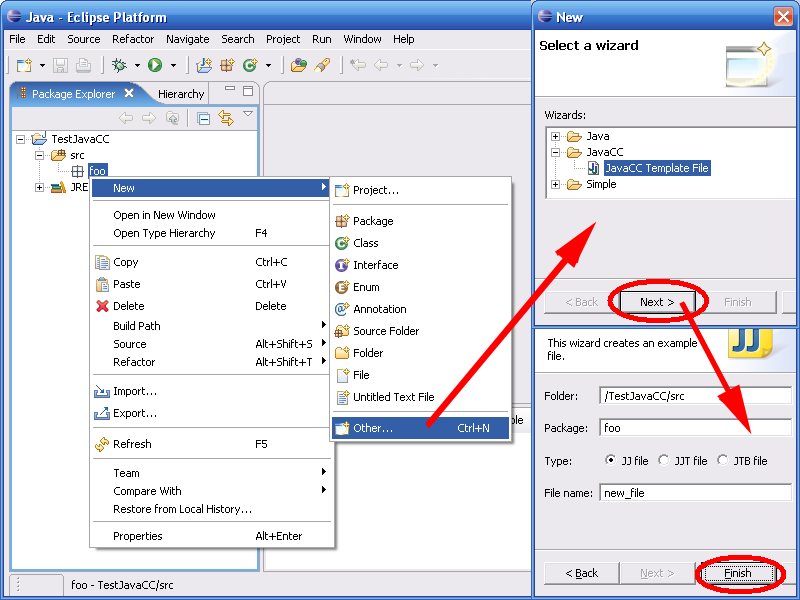

JavaCC Eclipse Plug-in for Eclipse 3.1 - 3.2
Last update 26 november 2006
JavaCC plug-in is designed to help development of JavaCC applications.
License : GPL / Cecill
You can download the last version from sourceforge : sourceforge site
Or use this site as an update site in Eclipse :
http://eclipse-javacc.sourceforge.net
To install, unzip in C:/eclipse and launch Eclipse with -clean.
The sources are with the plugin. See readme_developer.txt if
you want to hack the sources.
This plug-in provides :
- Editor
- Outline
- Format (still to improve)
- JavaCC JJTree JJDoc compilation, (see https://javacc.dev.java.net/)
- JTB compilation, (see http://compilers.cs.ucla.edu/jtb/)
- JavaCC, JJTree, JJDoc, JTB options
- Problems reporting
- Console for JavaCC outputs with hyperlinks to Errors and Warnings
- Decoration of generated files
- Navigation into rules definitions (open declaration)
- Support Eclipse 3.1, 3.2 Java 1.4, 1.5, JavaCC4.0, JTB 132
- Matching bracket highlight
- Keyboard shortcuts : Comment lines Ctrl+/, Open declaration
Ctrl+clic, Format Ctrl+Shift+F
- JavaCC is launched in the same directory as the grammar files (to
facilitate package handling)
- More help is available with the plug-in via Eclipse menu Help /
Help Contents.
New in 1.5.6 : Eclipse 3.1 compatible, handle case where no src/bin dir are defined
New in 1.5.5 : Eclipse 3.2.1 Bug 1585822, console hyperlinks
New in 1.5.4 : suppress warnings in generated files
New in 1.5.3 : corrected plugin key conflict F3
New in 1.5.2 : bug correction
New in 1.5.1 : french version
New in 1.5 : update site, automatic format, self-contained javacc.jar,
exclude a jj file from build
Quick Start
1) Create a new Java project and a package "foo"
2) Select package "foo" and create a new JavaCC file.
Just accept all default settings.

Beware templates files are for Java 1.5 (you must change in generated
file
to JDK_VERSION = 1.4 if you use java 1.4)
3) You have now a new JavaCC file, compiled with JavaCC and all
generated java files in you project.

Note that :
- the generated files are decorated with a "G"
and a "<from.jj>" to indicate the
.jj file they come from,
- there may be warnings from the Java
Compiler (Eclipse doesn't like JavaCC generated code),
- JavaCC console opens automatically.
4) Run the example
Select "TestJavaCC" and menu "Run"/ "Run
as..." / "Java
application"
Choose "eg1" for the main type.
You can now test your JavaCC
application :

You can do the same with the template for JJTree :

and also with the template for JTB: